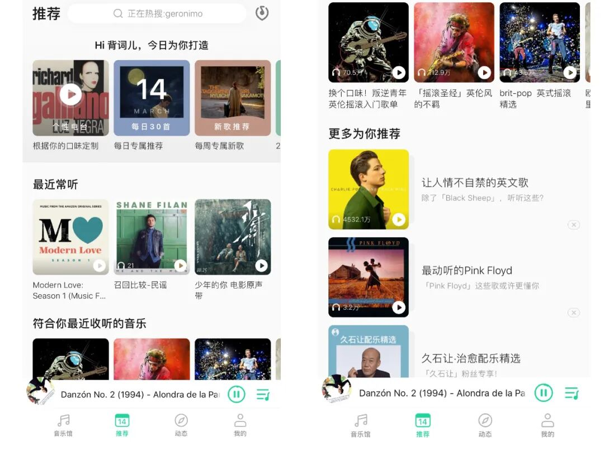
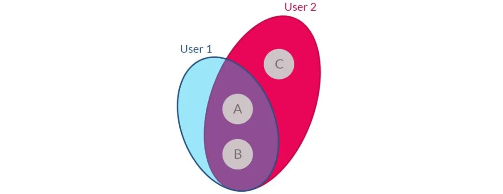
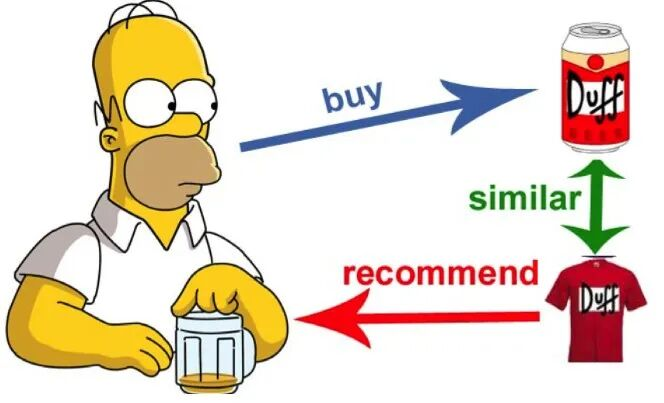
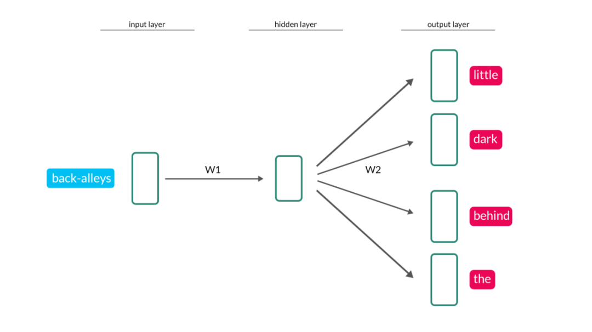
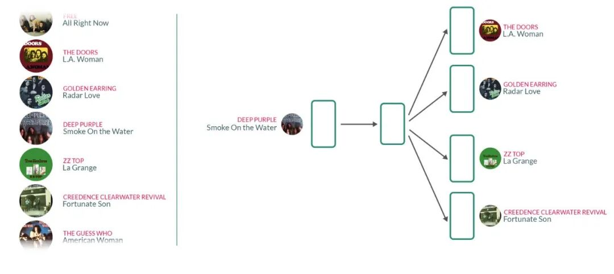
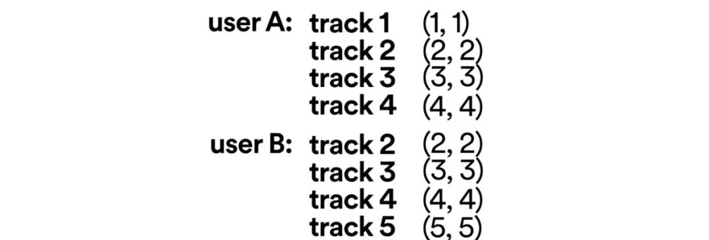
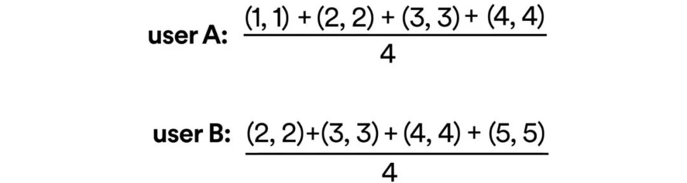
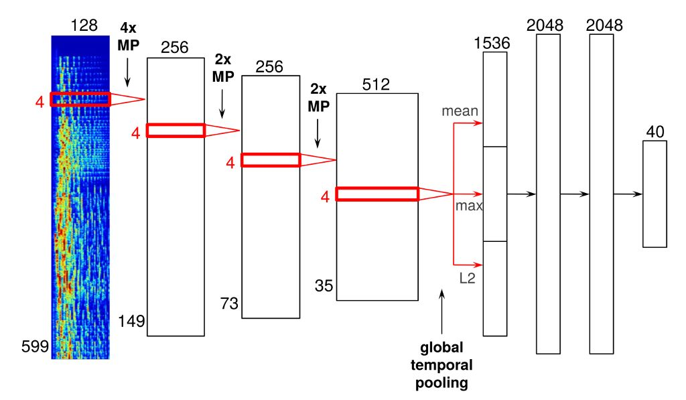
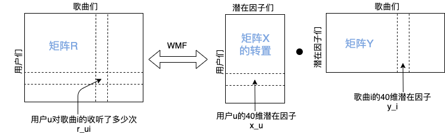

「MIR-04」音乐推荐: 努力懂你的预言家
如何在千万首你从来没听过的歌曲/歌手/歌单中, 挑出最符合你品味的候选? 让音乐推荐算法成为你挑歌之路上的专属预言家!

-
经典的协同过滤 -
完全基于音频信号的推荐
-
万物皆可embedding
『经典的协同过滤』
协同过滤 (简称CF) 大概是最常见的推荐算法了, 它和我们首先能想到的推荐逻辑一样: "用户1和用户2是因为音乐结缘的好朋友, 两个人有很相似的听歌历史(都听过歌曲A和B), 当用户2给1推荐1没听过的新歌C, 用户1应该会喜欢哒! " 这就是所谓的User-based CF.
上图来自Medium
而另外一种Item-based CF则是通过物品之间的相似进行推荐:

上图来自Medium
那么问题来了, 在音乐这个场景中, 如何判断不同歌曲之间是相似的? 又如何判断不同听歌群众之间的相似? 先来解决歌曲相似的问题, 直接抛出Spotify的解决方案: 用自然语言处理中word2vec的方法, 从海量歌单入手实现song2vec.
在文本信息中, 语义相似或有潜在联系的词语, 会更大概率地出现在同一个段落, 因此用海量文本信息训练出来的自然语言处理模型, 其中隐层的权重就可以隐晦地表示一个词语, 实现word2vec. 比如下图中, 在训练这个大模型时, 输入端用了"后巷", 输出端用了"小", "暗", "后边", "the"(顿时不知道咋翻译)这些与"后巷"在同个自然段出现的词语. 以后我们判断"后巷"与"大街"有多相似时, 可以直接用下图中的模型权重W1, 与输入"大街"时模型对应的W1', 互相比较.
上图来自Medium
同理, 音乐平台上海量用户创建了海量的歌单, 这些歌单里涵盖的歌曲一般都有很强的相关性, 也许是流派相似, 也许是同个时代的热门, 等等等等. 那我们也可以像word2vec一样, 实现song2vec:
上图来自Medium
此时此刻, 每一首出现在歌单里的歌曲都能分别被表示成一个向量,
向量之间的相似性可通过欧氏距离, cosine距离, 或其他各种距离去计算,
或者交给开源的"ANNOY".
而用户之间的相似性, 则可以根据他们的听歌历史对应的向量去计算. 比如下图中用户A和B分别听过4首歌曲, 每个歌曲通过song2vec得到的向量用简单的2个数值表示一下:

那么将歌曲的向量加和取平均, 就能得到代表用户A和B的向量, 分别是(2.5, 2.5)和(3.5, 3.5).

接下来用户A和B到底多相似, 就又回到计算向量之间的距离问题了.
☞ ANNOY: https://github.com/spotify/annoy
说到这里, 不知道大家是否有发现协同过滤的弊端? 那就是"冷启动"问题, 即song2vec只能将在歌单里出现过的歌曲变成向量, 如果有太冷门的歌曲, 从来没被任何用户放在歌单里, 或者一首刚刚发布的新歌, 岂不是没有对应向量的存在?
基于内容的推荐就是解决冷启动的一剂良药, 而海量的音乐内容除了有歌词,
语种, 发行时间等信息之外,
音乐本身最最本质的音频信号也可以用于推荐.
『完全基于音频信号的推荐』
已经有不少工作尝试将我们之前"音频特征小全"里提到的各种特征, 加入进推荐系统里, 然而收效甚微. 直到2013年NeurIPS上的一篇"Deep content-based music recommendation"横空出世, 这是一作Aäron van den Oord在Spotify实习时的成果, 他现在在Google DeepMind工作, WavNet也是他的主要成就. 这篇文章和对应的博客也已经被许多人翻译成了中文.
文章里并没有用到多炫酷的深度学习模型, 音频预处理也是常见的波形转变为2D的时频谱, 再将其作为输入. 训练好的模型可以实现将一首歌表示成一个40维的向量:

最关键的点就在于, 在训练模型的过程中用到的40维是什么? 从哪儿来的? 答案是把"各个用户对各个歌曲收听次数量"的矩阵进行分解后得到的表示各个歌曲的40维潜在因子(latent factors), 也就是下图里的"y_i".

论文中矩阵分解用到的是WMF (weighted matrix factorization, 详见后文方参考文献), 设定超参数为40即可分别得到表示用户的和表示歌曲的40维潜在因子.
我们单独把"歌曲i的40维潜在因子y_i"抽出来, 在训练深度模型时, 将该歌曲的时频谱作为输入, 设定模型输出y'_i也是40维, 训练过程中使y'_i不断地去接近y_i的值. 对于其他训练集中的歌曲也是同样操作, 最后深度学习模型的参数θ可以做到使所有y'_i和y_i之间的MSE差距最小:
当来了一首全新的歌时, 将其时频谱输入到刚训练好的模型中,
就能预测输出一个表示这首歌的40维潜在因子, 将它与原来分解出来的用户u的40维潜在因子x_u相乘,
就能估算出用户u将来会收听这首新歌多少次了! 若预测到收听次数越高,
把这首新歌推荐给用户u的可能性就越大.
当然也可以把深度学习模型输出的40维潜在因子, 像上文的song2vec一样, 用于相似歌曲的召回!
☞ 原论文链接: https://papers.nips.cc/paper/5004-deep-content-based-music-recommendation
☞ WMF参考文献: Yifan Hu, Yehuda Koren, and Chris Volinsky. Collaborative filtering for implicit feedback datasets. In Proceedings of the 2008 Eighth IEEE International Conference on Data Mining, 2008.
『万物皆可embedding』
除了协同过滤和基于内容的推荐,
更厉害的音乐推荐系统还应该做到为用户设身处地的进行推荐, 即contex-aware.
比如我在跑步的时候要是一直被推荐到瑜伽歌曲, 那就不太合适,
但这里又会涉及到app与用户隐私之间的问题.
目前业界多为混合推荐, 各种策略均有. 所用特征如果一个值无法清晰表示, 不如变成像song2vec或潜在因子那样的embedding. 关于音乐推荐系统的更多前沿学术内容可以参考Markus Schedl和Peter Knees发表过的文章.
☞ "Deep Learning in Music Recommendation Systems." Frontiers in Applied Mathematics and Statistics 5 (2019): 44.
最后, 音乐推荐更离不开用户的反馈, 当你在app上对我们推荐歌曲的喜恶越明确, 算法就越会贴合你的口味.
分别用"完全基于音频的潜在因子"和"协同过滤里word2vec"召回的相似歌曲, 有什么微妙的不同, 欢迎大家扫码去我的QQ音乐歌单中感受一下 (注: 歌单中均以第一首歌曲为起源, 第2&3首用了42维audio embedding, 第3&4首用了84维, 最后两首用word2vec进行相似歌曲召回).